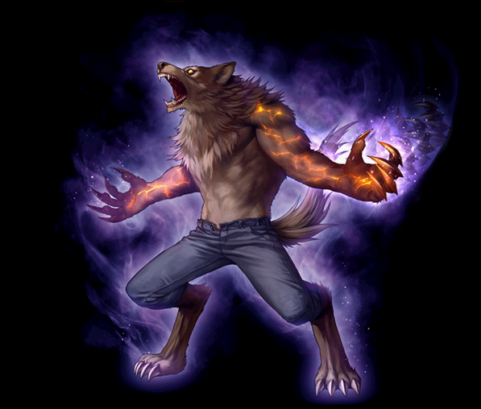

2022/7/6～ ウルフマン 覚醒スキル一覧
[通常スキル]
ブラッディバーサーカー
フレイムバーサーカー
ルナティックバーサーカー
ブラッディバーサーカー
フレイムバーサーカー
| フレイムバーサーカー | |||||||
|---|---|---|---|---|---|---|---|

|
|||||||
| [専用パッシブ] 灼熱の心臓 | |||||||
| スキル説明 | 心臓から燃え上がる灼熱の魔力で火属性ダメージを強化させ、火属性ダメージの強化限界値を増加させる。 |
||||||
| スキル効果 |
- 火属性攻撃を50%強化 - 火属性攻撃上限値を450%まで引き上げる - (※通常時の最大値は400%が仕様) |
||||||
ルナティックバーサーカー
| ルナティックバーサーカー | |||||||
|---|---|---|---|---|---|---|---|
|  | |||||||
| [専用パッシブ] 月輪の呪縛 | |||||||
| スキル説明 | クリティカル確率と敵致命打抵抗低下が上昇する。 |
||||||
| スキル効果 |
すべてのスキルの致命打率25%増加 敵のクリティカル抵抗15%減少 |
||||||